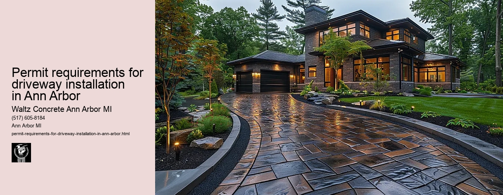

News
Concrete Driveway Installation Ann Arbor Mi
Concrete Driveway Installation Ann Arbor Mi
Choosing the right contractor for installation
Cost of concrete driveway installation in Ann Arbor
Permit requirements for driveway installation in Ann Arbor
The process and timeline of concrete driveway installation
Different types of concrete used in driveways
Maintenance and Repair of Concrete Driveways in Ann Arbor Mi
Maintenance and Repair of Concrete Driveways in Ann Arbor Mi
Preventive maintenance tips for durability
Common causes for concrete driveway damage
Professional companies offering repair services in Ann Arbor
Doityourself versus professional repairs
Costs associated with repairing a concrete driveway
Designs and Styles of Concrete Driveways in Ann Arbor Mi
Designs and Styles of Concrete Driveways in Ann Arbor Mi
Popular design trends for driveways
Considering climate factors when choosing a design or style
Unique customizations available for concrete driveways
Influence of home architecture on driveway design
Stamped stained and decorative options
Environmental Impact of Concrete Driveways in Ann Arbor Mi
Environmental Impact of Concrete Driveways in Ann Arbor Mi
Carbon footprint associated with concrete production
Use of sustainable materials in concrete driveways
Drainage considerations to reduce environmental impact
Local regulations regarding environmentally friendly driveways
Potential use of permeable or porous pavement
Alternatives to Concrete Driveways in Ann Arbor Mi
Alternatives to Concrete Driveways in Ann Arbor Mi
Asphalt driveways and their proscons
Paver stone driveways and their benefitsdrawbacks
Gravel or crushed stone as an alternative option
Comparing costs between different driveway materials
Resinbound surfaces as emerging technology
About Us
Contact Us

Permit requirements for driveway installation in Ann Arbor
Permit requirements for driveway installation in Ann Arbor
Title: Understanding Permit Requirements for Driveway Installation in Ann Arbor
Driveway installation is a significant home improvement project that can enhance the aesthetic appeal and value of your property. However, before you embark on this venture in the city of Ann Arbor, Michigan, it's crucial to understand the permit requirements in accordance with local zoning ordinances.
Firstly, under the Ann Arbor City Code, all driveway installations require permits for construction. The primary aim of these regulations is to ensure safe construction practices and adherence to specific design standards. Its not just about getting the job done; it's about ensuring that it's done right while considering factors such as environmental sustainability and neighborhood aesthetics.
Acquiring a permit requires several steps. To start with, you need to submit an application to the Building Department at Larcom City Hall in downtown Ann Arbor. The application should include details of your proposed project including dimensions, materials used for construction and a clear marking of property lines.
A critical component required during this application process is a site plan or survey map showing detailed measurements of the existing conditions and proposal. This includes exact locations where work will be performed (such as property boundaries), distances from neighboring properties or structures like sidewalks or roads, and any potential impact on drainage patterns or public utilities.
In addition to submitting an application form along with required documents (like proof of ownership), there might be fees associated with obtaining a driveway permit which vary depending on project size and complexity. You'll also need to schedule inspections throughout various stages of your project before work begins, during construction, and upon completion so that city officials can verify compliance with approved plans.
Moreover, when planning your driveway installation in Ann Arbor, consider using permeable paving materials like gravel or porous concrete which are highly encouraged by local government due to their positive environmental impact. These types of materials allow water to seep into the ground instead of running off into storm drains thereby reducing risks related to flooding and water pollution.
In case the driveway installation involves removing any trees, remember that Ann Arbor has strict tree protection ordinances. Depending on the size and type of tree, you may need a separate permit for its removal or be required to plant new trees in compensation.
Finally, it's worth noting that failure to obtain necessary permits can result in penalties including fines or legal action. Therefore, while the permitting process might seem cumbersome, its essential for ensuring safety standards and maintaining the city's commitment towards environmental sustainability.
To conclude, understanding and complying with permit requirements for driveway installation in Ann Arbor is not just about adhering to local regulations. It is also about respecting our shared environment and contributing positively towards building a safer and more sustainable community. So before you plan your next home improvement project, make sure to familiarize yourself with these rules and regulations happy paving!
Cost of concrete driveway installation in Ann Arbor
Permit requirements for driveway installation in Ann Arbor
Frequently Asked Questions
What are the permit requirements for installing a driveway in Ann Arbor, Michigan?
In Ann Arbor, you will need to obtain a Right-of-Way Permit from the citys Public Service Unit before starting your driveway installation. You also need to provide a detailed site plan and pay associated fees.
Where can I apply for a driveway installation permit in Ann Arbor?
You can apply for a Right-of-Way Permit at the City Clerk’s office located at City Hall, 301 E. Huron St., or through the citys online system.
Are there any specific guidelines or restrictions for concrete driveways in Ann Arbor?
Yes, there are specific design and construction standards that must be followed while installing a driveway. These include specifications about width, length, slope gradient and drainage provisions. The use of impervious materials like concrete may also be regulated under town codes on stormwater management. Check with the local permit office to get complete details.
Permit requirements for driveway installation in Ann Arbor